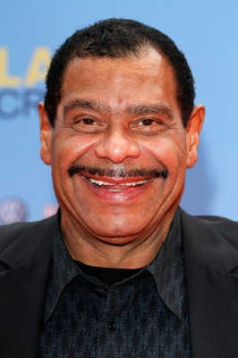

#9322 Otto 1 - Der Film


 IMDB-Wertung: 6.4 / 10
IMDB-Wertung: 6.4 / 10  Metascore: 0
Metascore: 0 
"Otto – Der Film" ist eine deutsche Filmkomödie aus dem Jahr 1985. Unter der Regie von Xaver Schwarzenberger agiert Starkomiker Otto Waalkes in seinem ersten Kinofilm. Es ist der bis heute erfolgreichste deutsche Kinofilm seit Beginn der Zuschauerzahlenerfassung 1980
Jahr: 1985
Dauer: 83 Minuten
FSK: 0
Land: West-Deutschland Studio: Tobis FilmkunstTonspuren:
Untertitel:
Auflösung: 1080p (1920x1080) Größe: 5058 MB
Genre: Komödie, Liebe
Regisseur: Xaver Schwarzenberger,  Otto Waalkes
Otto Waalkes
Drehbuch: Bernd Eilert
Soundtrack: Herb Geller
Darsteller:
 Sky du Mont als Ernesto
Sky du Mont als Ernesto- Peter Kuiper als Shark
 Gottfried John als Sonnemann
Gottfried John als Sonnemann- Johannes Heesters als Clochard
-  Günther Kaufmann als US-Soldat
- Otto Waalkes als Otto / Gutes Gewissen / Schlechtes Gewissen / Stimme von Ottos Vater / Stimme von Ottos Mutter / Stimme von Friseur Herr Astrid
- Elisabeth Wiedemann als Konsulin von Kohlen und Reibach
- Jessika Cardinahl als Silvia von Kohlen und Reibach
- Andreas Mannkopff als Haenlein
- Karl Lieffen als Floppmann
- Tilly Lauenstein als Dame
- Karl Schönböck als Bodo Fürst Marckbiss
- Helmut Hoffmann als
- Hannelore Paschier als
- Engelbert Feeken als
- Eric Vaessen als Butler Jean
- Erich Bar als Rocker Werner
- Hans-Heinz Jochmann als General Stössner
- Hans Nitschke als Bauarbeiter
- Karl-Ulrich Meves als Bankangestellter
- Herbert Weissbach als Zwischenrufer im Altersheim
- Lutz Mackensy als Kunde mit Springböcken
- Horst Tomayer als Kommissar
- Panos Papadopulos als Stavros
- Klaus Dahlen als (credit only)
- Violetta Tarnowska als Frau Meyer-Vornehm
- Johannes Grützke als Oberkirchenrat Mehlig
- Achim Ruppel als
- Wilken F. Dincklage als Barmann
- Wolfgang Kleff als Friseur Herr Astrid
- Eberhard Feik als Koch (uncredited)
- Renate Muhri als Bankangestellte (uncredited)
Datei: X:\6-Hexalogie(A-Z)\Otto\Otto 1 - Der Film (1985, FSK0, 1920x1080).mkv seit 27.07.2018
Festplatte: HD Collection-3(N-Z)-6(A-Z)
 Es gibt insgesamt 9 Filme in der Gruppe '6-Hexalogie(A-Z)\Otto'
Es gibt insgesamt 9 Filme in der Gruppe '6-Hexalogie(A-Z)\Otto'